Photo Gallery
The Years Before the Arrival of F.H. Clergue
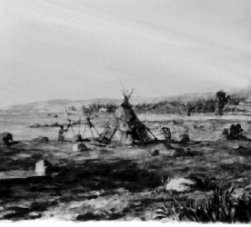 Sault Ste. Marie was originally known as Bawating to the Ojibway who resided here. Photograph:Sault Ste. Marie Museum. |
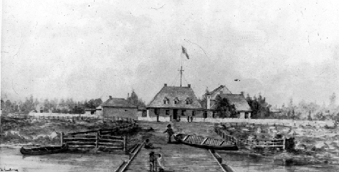 The North West Company constructed a post on the north shore of the St. Mary's River. The post was taken over by the Hudson's Bay Company when the firms amalgamated in 1821. Photograph: Sault Ste. Marie Museum. |
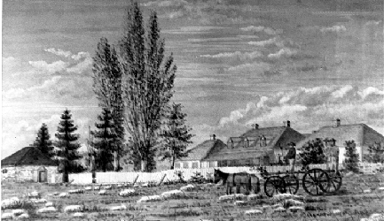 The Hudson's Bay Company took over the operation of the post originally constructed by the North West Company following the amalgamation of the firms in 1821. Note the powder magazine - later the basis for Clergue's Block House - in the bottom right hand corner. Photograph: Sault Ste. Marie Museum. |
|
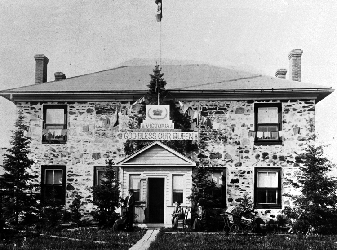 The Stone House, constructed by furtrader Charles Oakes Ermatinger, decorated to commemorate Queen Victoria's Jubilee. |
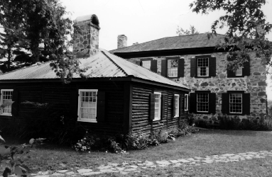 A view of the Ermatinger Old Stone House showing the only non-original building, the summer kitchen, which was constructed in the early 1980's for programming purposes. Photograph: Sault Ste. Marie Library. |
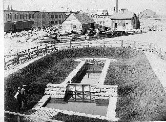 The North West Company dug a batteau lock in the late 18th century to eliminate the need to portage around the Rapids. Francis H. Clergue located the remains of the lock while renovating the Block House and decided to renovate the locak as well. Photograph: Sault Ste. Marie Museum. |
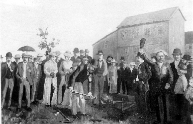 The members of the Conmee Syndicate along with their friends and supporters gathered to witness the sod being turned for the first power canal. Photograph: Sault Ste. Marie Museum. |
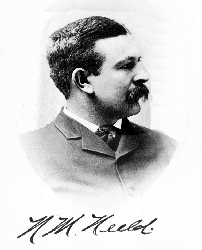 Nathaniel N. Neeld was a member of the Conmee Syndicate, a group of local entrepreneurs who attempted to harness the force of the St. Mary's Rapids to produce hydroelectricity. Photograph: Private Collection. |
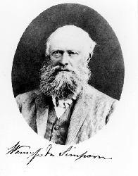 Wemyss M. Simpson, the last factor at the Hudson's Bay post at Sault Ste. Marie and the first Member of Parliament for the community following Confederation, was also a member of the Conmee Syndicate. Photograph: Private Collection. |
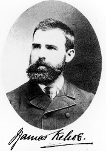 John James Kehoe. a local lawyer, was also a member of the Conmee Syndicate. |
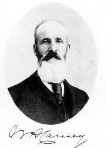 William Henry Carney, sheriff for the District of Algoma, was also a member of the Conmee Syndicate. Photograph: Private Collection. |